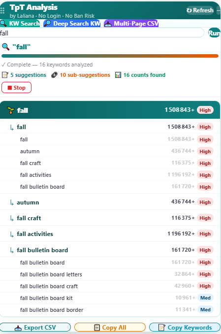
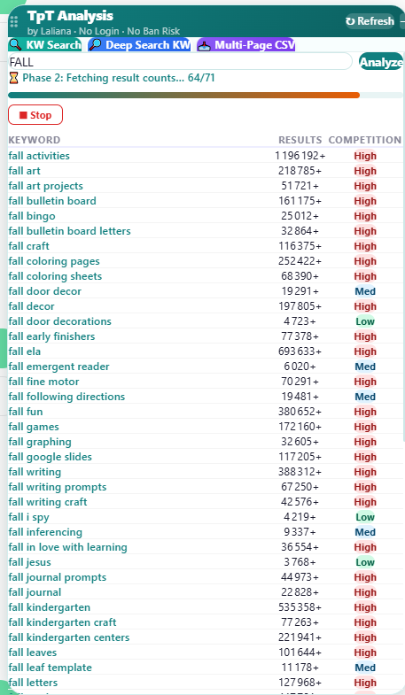
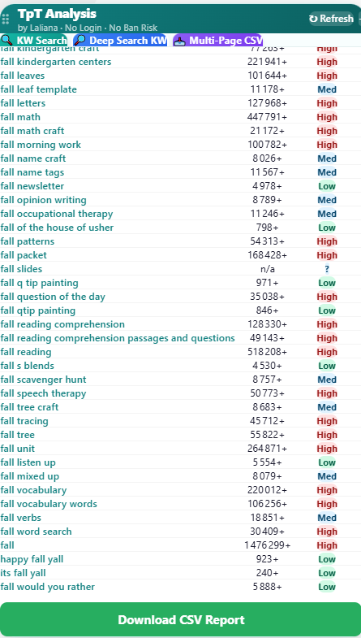
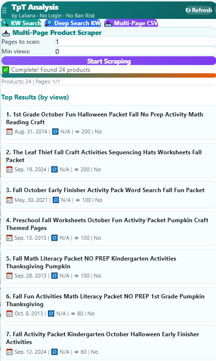
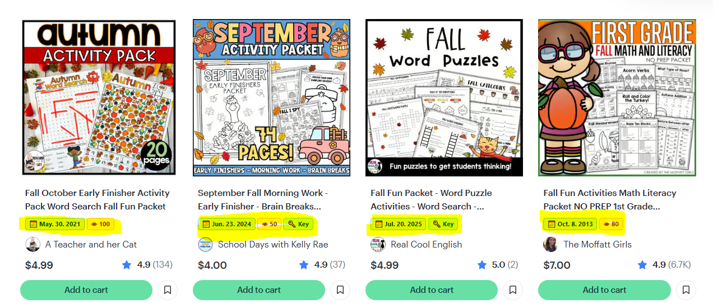

TpT Niche Research Pro
Keyword and competitor research that works right on TeachersPayTeachers. See how many results and how much competition any keyword has, then find the niches worth your time.
Four tools in one panel
A small panel appears on TeachersPayTeachers with three tabs: KW Search, Deep Search KW and Multi-Page CSV. A fourth tool adds badges right on the search results.
Keyword Search
Type a keyword and see suggestions, results counts and a High / Med / Low competition label for each.
Deep Search
A deeper sweep that finds many more keyword ideas, then fetches the result count for each one.
Multi-Page Scraper
Scan several pages of results, sort products by views, and download everything as a CSV.
Inline badges
See the publish date and view count right on TpT search result cards, without opening each product.
🔍 Keyword Search
Find out how crowded a keyword is before you create a product for it.
- Open the "KW Search" tabType a keyword (for example "fall") and press Run.
- Read the resultsYou get the keyword, its suggestions and sub-suggestions, each with a results count and a competition label: High, Med or Low.
- Spot the gapsKeywords with a Low or Med label and a decent number of results are good candidates for a new product.
- Export what you needUse Export CSV, Copy All or Copy Keywords at the bottom of the panel.

🔎 Deep Search KW
Go beyond the obvious keywords and discover long-tail ideas.
- Open the "Deep Search KW" tabType your main keyword and press Analyze.
- Wait for the two phasesThe tool first collects keyword ideas, then fetches the result count for each one. A progress bar shows how far it is, and you can press Stop at any time.
- Review the full listEvery keyword comes with its results count and competition label, so you can sort out the best opportunities quickly.
- Download the reportPress "Download CSV Report" to keep the whole list.


📥 Multi-Page Scraper
Study what's already on page 1, 2, 3… of a TpT search, and see which products get the most views.
- Search on TpTRun any search on TeachersPayTeachers as usual.
- Open the "Multi-Page CSV" tabChoose how many pages to scan, and a minimum number of views if you want to filter.
- Press "Start Scraping"The tool collects the products and shows the top results ranked by views, with their publish date.
- Download the CSVPress "Download CSV" to analyze competitors in a spreadsheet.

🏷️ Inline badges on TpT results
While you browse TpT search results, small badges appear under each product title.
- Search on TpT as usualNo need to open the panel.
- Read the badgesUnder each product title you see its publish date and view count, so you can tell at a glance what is new, old, popular or quiet.

Buy and set up
- Buy itClick "Buy now". After payment you receive your license key by email.
- Install the free Tampermonkey extensionIt runs the tool in your browser. Then add the TpT Niche Research Pro script to it.
- ActivateOpen TeachersPayTeachers and enter your license key when asked. The tool activates automatically.
- Start researchingUse the panel on TpT: KW Search, Deep Search KW and Multi-Page CSV.
Questions
Quick answers before you buy.
Do I need technical skills?
No. If you can install a browser extension, you can use it. The setup only takes a couple of minutes.
Do I need to log in to use it?
No login is needed to use the research panel.
Is there a free version?
Yes. The free TPT Seller Toolkit helps you track your sales and plan your Throw a Sale sales. See the free extension.
What if I need help?
Reply to your purchase email and I'll help you get set up.
Is it connected to TeachersPayTeachers?
No. TpT Niche Research Pro is an independent tool and is not affiliated with or endorsed by TeachersPayTeachers.